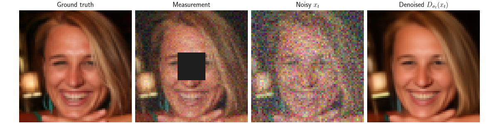
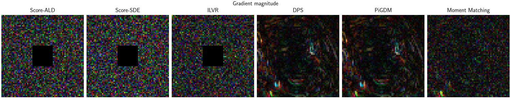
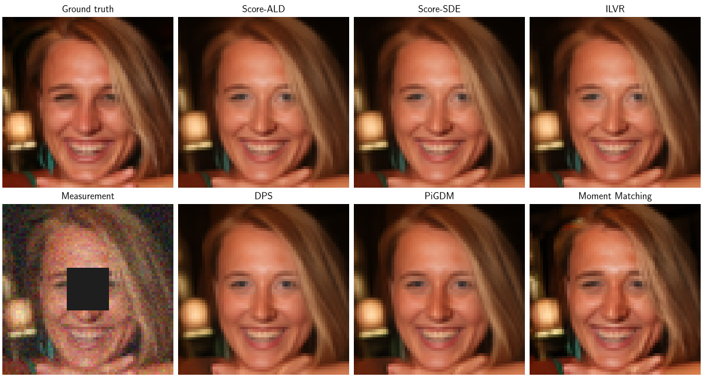

Note
New to DeepInverse? Get started with the basics with the 5 minute quickstart tutorial..
Noisy data-fidelity terms for diffusion posterior sampling#
This example compares six approximations of the measurement-matching term used by diffusion posterior samplers.
Three of them measure the mismatch directly at the noisy iterate \(x_t\), and therefore need no denoiser evaluation at all:
Score-based Annealed Langevin Dynamics (Score-ALD) Jalal et al.[1],
Score-SDE Song et al.[2],
Iterative Latent Variable Refinement (ILVR) Choi et al.[3].
The other three first denoise \(x_t\), and differ in how much of the conditional uncertainty they keep:
Diffusion Posterior Sampling (DPS) Chung et al.[4],
Pseudoinverse-Guided Diffusion Models (PiGDM) Song et al.[5],
Moment Matching Rozet et al.[6].
We follow the presentation of A Survey on Diffusion Models for Inverse Problems Daras et al.[7], which reviews these and other ways of incorporating measurements into diffusion models.
Here, we focus on the noisy data-fidelity term itself. For a complete DPS reconstruction, including the diffusion schedule and reverse-time sampling loop, see DPS – Posterior Sampling with Diffusion Models. For a tutorial on assembling a posterior sampler from an SDE, a solver, and a data-fidelity term, see Building your diffusion posterior sampling method using SDEs.
Posterior sampling and the intractable likelihood#
We use a Variance-Exploding (VE) diffusion, whose scaling is \(s(t)=1\):
By Bayes’ rule, the conditional score is
A diffusion denoiser \(D_\sigma\) estimates the unconditional part using Tweedie’s formula. The second term is harder because
is generally intractable. The goal of the methods below is to replace \(p(x_0\mid x_t)\) by a Gaussian approximation
For a linear forward model and Gaussian measurement noise, the integral of the two Gaussian densities is available in closed form:
The approximations differ primarily in their choice of
\(\Sigma_t(x_t)\).
DPS is the degenerate, zero-covariance case; PiGDM uses an isotropic
covariance; and Moment Matching estimates a structured covariance with the
second-order Tweedie formula. A
deepinv.sampling.NoisyDataFidelity approximates the gradient of the
resulting negative log-likelihood. Consequently,
deepinv.sampling.PosteriorDiffusion subtracts the gradient returned
by the data-fidelity object from the unconditional score.
The word noisy here refers to the diffusion-corrupted variable \(x_t\); the measurements themselves do not have to be noisy.
Create one inverse problem and one noisy diffusion state#
We use linear inpainting here. DPS also supports differentiable nonlinear forward operators, whereas the PiGDM and Moment Matching implementations below require a linear operator.
import matplotlib.pyplot as plt
import torch
import deepinv as dinv
device = dinv.utils.get_device()
dtype = torch.float32 if "mps" in str(device) else torch.float64
x_true = dinv.utils.load_example(
"FFHQ_example.png", img_size=64, resize_mode="resize", device=device
)
mask = torch.ones_like(x_true)
mask[..., 24:40, 24:40] = 0.0
measurement_noise = 0.05
physics = dinv.physics.Inpainting(
img_size=x_true.shape[1:],
mask=mask,
device=device,
noise_model=dinv.physics.GaussianNoise(sigma=measurement_noise),
)
y = physics(x_true)
sigma_t = 0.15
rng = torch.Generator(device=device).manual_seed(0)
x_t = x_true + sigma_t * torch.randn(
x_true.shape, generator=rng, device=device, dtype=x_true.dtype
)
# We use the same FFHQ NCSNpp denoiser for every approximation.
denoiser = dinv.models.NCSNpp(pretrained="download").to(device)
with torch.no_grad():
x_0_denoised = denoiser(x_t, sigma_t)
dinv.utils.plot(
{
"Ground truth": x_true,
"Measurement": y,
r"Noisy $x_t$": x_t,
r"Denoised $D_{\sigma_t}(x_t)$": x_0_denoised,
},
figsize=(12, 3),
)

Selected GPU 0 with 5306.25 MiB free memory
Score-ALD: guide with the noisy iterate itself#
The cheapest option is not to denoise at all. Score-ALD Jalal et al.[1] evaluates the measurement mismatch directly at \(x_t\), and compensates for the fact that \(x_t\) is noisy by inflating the measurement noise variance with an annealing parameter \(\gamma_t\):
which gives the guidance
By default \(\gamma_t=\sigma_t\), so the guidance is weak early in the
diffusion, when \(x_t\) is mostly noise, and strengthens as
\(\sigma_t\to 0\). Because that denominator already sets the scale,
weight=1 is the natural choice here.
ald = dinv.sampling.ALDDataFidelity(weight=1.0)
Score-SDE and ILVR: noise the measurements instead#
Score-SDE Song et al.[2] makes the same comparison, but first lifts the measurements to the current noise level,
so that \(y_t\) and \(A x_t\) are corrupted by comparable amounts of noise. ILVR Choi et al.[3] differs only in how the measurement residual is lifted back to the image space: it uses the pseudo-inverse \(A^\dagger\) rather than the adjoint \(A^\top\),
score_sde = dinv.sampling.ScoreSDEDataFidelity(weight=1.0)
ilvr = dinv.sampling.ILVRDataFidelity(weight=1.0)
DPS: plug in the denoised posterior mean#
DPS Chung et al.[4] approximates the conditional distribution by a Dirac mass at the denoised posterior mean:
This is the degenerate Gaussian approximation \(\Sigma_t(x_t)=0\). Inserting it into the integral gives \(p_t(y\mid x_t)\approx p(y\mid D_{\sigma_t}(x_t))\). Note that this is equivalent to differentiating the residual norm:
In deepinv.sampling.DPSDataFidelity, \(\lambda\) is the
weight parameter. It controls the scale of the data-fidelity contribution
relative to the unconditional prior score: a larger value enforces the
measurements more strongly.
The residual norm above carries no noise variance, so \(\lambda\) has to
absorb a factor of order \(\|A D_{\sigma_t}(x_t)-y\|/\sigma_y^2\), in the
hundreds here. To keep weight on the same scale as the other terms, we use
guidance="annealed", which differentiates the Gaussian negative
log-likelihood with the annealed variance \(\sigma_y^2+\sigma_t^2\) instead:
Pass guidance="norm" (the default) for the residual norm of the original
paper.
dps = dinv.sampling.DPSDataFidelity(denoiser=denoiser, weight=1.0, guidance="annealed")
PiGDM: use an isotropic covariance approximation#
PiGDM Song et al.[5] retains conditional uncertainty but approximates it with an isotropic Gaussian:
Writing \(J_D\) for the denoiser Jacobian, the resulting gradient is
where \(\sigma_y\) is the standard deviation of the measurement noise,
read from physics.noise_model.sigma.
The inverse is evaluated exactly for
deepinv.physics.DecomposablePhysics operators
and with conjugate gradient for other linear operators. Jacobian-vector
products are computed automatically, without forming \(J_D\) explicitly.
The \(\lambda\) factor is exposed as weight in
deepinv.sampling.PiGDMDataFidelity; increasing it strengthens the
data-fidelity contribution relative to the unconditional prior score.
pigdm_weight = 1
pigdm = dinv.sampling.PiGDMDataFidelity(
denoiser=denoiser,
weight=pigdm_weight,
cg_max_iter=10,
)
Moment Matching: retain a structured covariance#
Moment Matching Rozet et al.[6] uses the denoiser Jacobian to approximate the conditional covariance rather than replacing it by an isotropic scalar. In our additive Gaussian parametrization, the second-order Tweedie formulas give
Moment Matching explicitly approximates the conditional distribution by the anisotropic Gaussian with this covariance:
The resulting gradient is
This can capture direction-dependent uncertainty, at the cost of solving a
denoiser-dependent linear system. DeepInverse evaluates the system with
conjugate gradient and uses vector-Jacobian products throughout.
The \(\lambda\) factor is the weight parameter of
deepinv.sampling.MomentMatchingDataFidelity; increasing it gives the
data-fidelity contribution more influence relative to the unconditional
prior score.
moment_matching_weight = 1
moment_matching = dinv.sampling.MomentMatchingDataFidelity(
denoiser=denoiser,
weight=moment_matching_weight,
cg_max_iter=3,
)
Compare the guidance terms#
Calling grad is enough to compare the six approximations at the same
\(x_t\). Their scales are method-dependent, so weight should be
tuned separately in a reconstruction. The plot independently normalizes the
magnitude of each gradient to emphasize its spatial structure.
The two families look different:
Score-ALD, Score-SDE and ILVR compare the noisy iterate to the measurements. Here \(x_t = x_0 + \sigma_t\omega\) is built from the ground truth, so
the signal cancels exactly, and the residual is pure noise. Their guidance maps therefore look like noise, and they vanish on the masked pixels, where \(A^\top\) and \(A^\dagger\) are zero.
DPS, PiGDM and Moment Matching instead compare a denoised estimate to the measurements, so their residual reflects genuine reconstruction error rather than the noise in \(x_t\). Backpropagating it through the denoiser spreads the guidance over the whole image, including inside the mask.
data_fidelities = {
"Score-ALD": ald,
"Score-SDE": score_sde,
"ILVR": ilvr,
"DPS": dps,
"PiGDM": pigdm,
"Moment Matching": moment_matching,
}
gradients = {}
for name, data_fidelity in data_fidelities.items():
gradient = data_fidelity.grad(x_t.clone(), y=y, physics=physics, sigma=sigma_t)
gradients[name] = gradient
norm = torch.linalg.vector_norm(gradient).item()
print(f"{name:>15s} gradient norm: {norm:.3e}")
dinv.utils.plot(
{f"{name}": gradient.abs() for name, gradient in gradients.items()},
figsize=(15, 3),
suptitle="Gradient magnitude",
)

Score-ALD gradient norm: 4.287e+02
Score-SDE gradient norm: 7.782e+02
ILVR gradient norm: 7.708e+02
DPS gradient norm: 1.146e+02
PiGDM gradient norm: 1.169e+02
Moment Matching gradient norm: 1.978e+02
Posterior sampling experiment#
The noisy data-fidelity object is one interchangeable component of
deepinv.sampling.PosteriorDiffusion. We now hold the denoiser, VE
diffusion, Euler solver, measurements, and random seed fixed, and change only
the noisy data-fidelity approximation. Using the same seed gives every method
the same initial noise and Brownian increments.
All six use weight=1: every term is normalized by a guidance strength of
order \(\sigma_y^2+\sigma_t^2\), so a single scale works for all of them.
Moment Matching is considerably slower on CPU because every diffusion step contains an inner conjugate-gradient solve. On CPU, we therefore display a precomputed reconstruction; on GPU and MPS devices, we compute it normally.
num_steps = 100
timesteps = torch.linspace(
1.0,
0.001,
num_steps,
device=device,
dtype=dtype,
)
sde = dinv.sampling.VarianceExplodingDiffusion(
alpha=0.25,
device=device,
dtype=dtype,
)
posterior_samples = {}
for name, data_fidelity in data_fidelities.items():
if name == "Moment Matching" and device.type == "cpu":
precomputed_sample = dinv.utils.load_url_image(
"https://huggingface.co/deepinv/demo/resolve/main/" "moment_matching.png",
device=device,
dtype=x_true.dtype,
)
posterior_samples[name] = precomputed_sample[:, : x_true.shape[1]]
continue
solver = dinv.sampling.EulerSolver(
timesteps=timesteps,
rng=torch.Generator(device=device),
)
posterior_sampler = dinv.sampling.PosteriorDiffusion(
data_fidelity=data_fidelity,
denoiser=denoiser,
sde=sde,
solver=solver,
device=device,
dtype=dtype,
verbose=False,
)
with torch.no_grad():
posterior_samples[name] = posterior_sampler(
y=y,
physics=physics,
seed=1,
denoise_output=True,
).clip(0.0, 1.0)
# One row per family: the denoiser-free terms on top, the denoiser-based ones
# below, each preceded by its reference image.
rows = [
{
"Ground truth": x_true,
**{
name: posterior_samples[name] for name in ("Score-ALD", "Score-SDE", "ILVR")
},
},
{
"Measurement": y,
**{
name: posterior_samples[name]
for name in ("DPS", "PiGDM", "Moment Matching")
},
},
]
fig, axs = plt.subplots(
len(rows), 4, figsize=(12, 6.5), squeeze=False, layout="compressed"
)
for row, images in zip(axs, rows, strict=True):
dinv.utils.plot(images, fig=fig, axs=row[None, :], show=False)
plt.show()

All six recover the masked region, at very different costs: Score-ALD, Score-SDE and ILVR need no denoiser evaluation for the guidance term, DPS needs one backward pass through the denoiser, and PiGDM and Moment Matching need a linear solve on top.
- References:
Total running time of the script: (1 minutes 22.838 seconds)